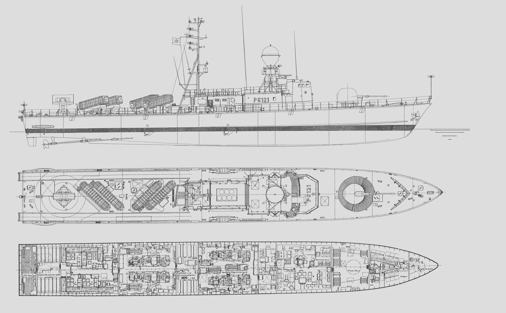

Gepard-Klasse · P6122 „Puma“
8.398 Dreiecke inklusive Geschütz, RAM und vier Exocet-Containern. Vollerer Bug, korrigierte Brückenoberseite und F124-artige Verwitterung mit gebackenen PBR-Texturen. Für die vorhandene FAC-Klasse.
65 %
Links: 0 % = Linienriss; rechts: 100 % = Modell mit durchscheinendem Referenzhintergrund. Beide Ansichten sind näherungsweise an Bug und Heck ausgerichtet; kein Vermessungsplan. Die Unterdeckanordnung wird nicht angezeigt.
Seitenansicht


Draufsicht
Verwitterung · Nahansicht

Ausgewaschenes Marinegrau, Salzschleier und lokale Rostläufe. Alle Effekte sind in den Spiel-Texturen enthalten; keine zusätzlichen Polygone.